MLC stats filter creates 10 predefined MLC zones during initial tuning. The
predefined MLC zones can resolve common cases, such as yellow and blue objects under
indoor light conditions. The predefined MLC zones can be customized to meet your
preferences using the Chromatix tool and the MLC fine-tune procedure.
Figure : Sample misleading color zone configuration from the Chromatix tool
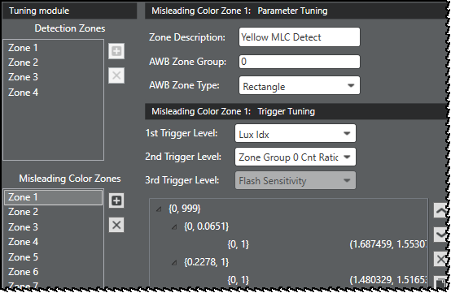
The following 10 MLC zones are predefined by the Chromatix tool during the AWB
initial tuning process.
MLC Zone 1
Figure : Enable MLC zones if a given image has enough stats in daylight region.
Trigger = Detection Zone Group 1 Count Ratio.
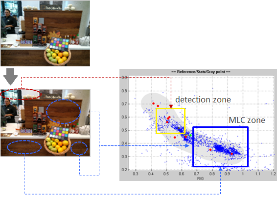
MLC Zone 2
Figure : Enable MLC zones if a given image has enough stats in daylight region.
Trigger = Detection Zone Group 1 Count Ratio.
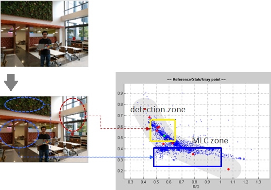
MLC Zone 3
Figure : Enable MLC zones if a given image has enough stats in F light region.
Trigger = Detection Zone Group 2 Count Ratio.
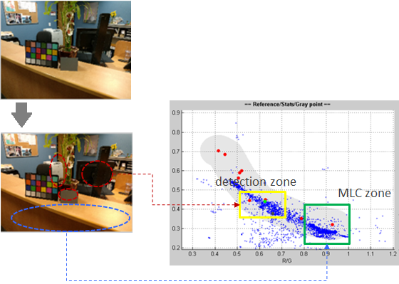
MLC Zone 4
Figure : Enable MLC zones if a given image has enough stats in F light region.
Trigger = Detection Zone Group 2 Count Ratio.
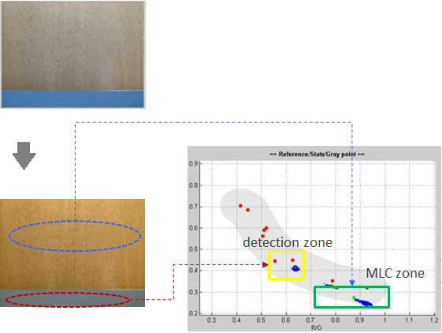
MLC Zone 5
Figure : Enable MLC zones if the brightness of a given image is within specific
ranges. Trigger = Lux Index.
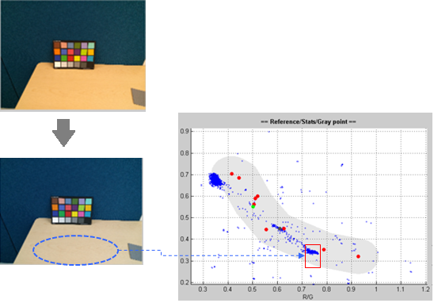
MLC Zone 6
Figure : Enable MLC zones if the brightness of a given image is within specific
ranges. Trigger = Lux Index
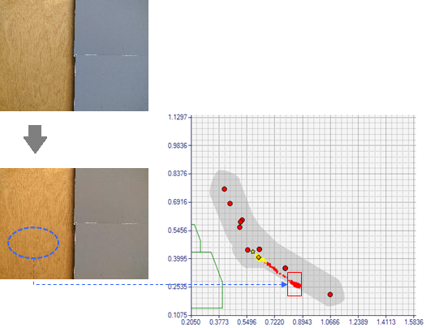
MLC Zone 7
Figure : Enable MLC zones if the brightness of a given image is within specific
ranges. Trigger = Lux Index.
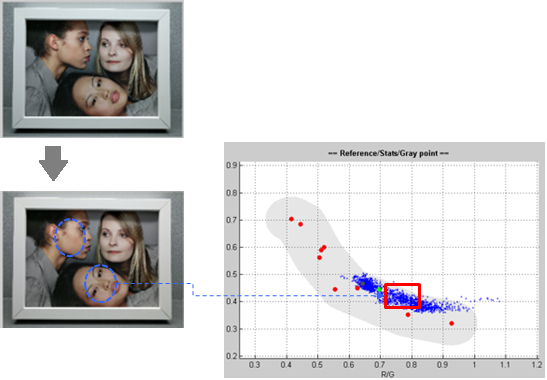
MLC Zone 8
Figure : Enable MLC zones if the brightness of a given image is within specific
ranges. Trigger = Lux Index.
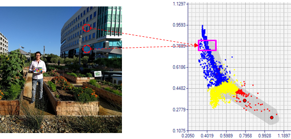
MLC Zone 9
Figure : Enable MLC zones if the brightness of a given image is within specific
ranges. Trigger = Lux Index.
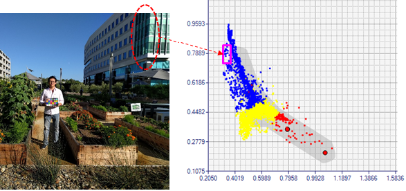
MLC Zone 10
Figure : Enable MLC zones if the brightness of a given image is within specific
ranges. Trigger = Lux Index.
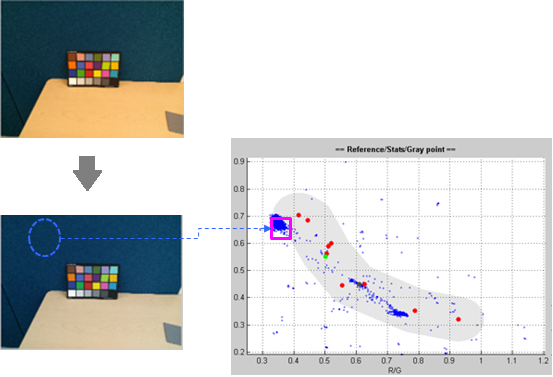